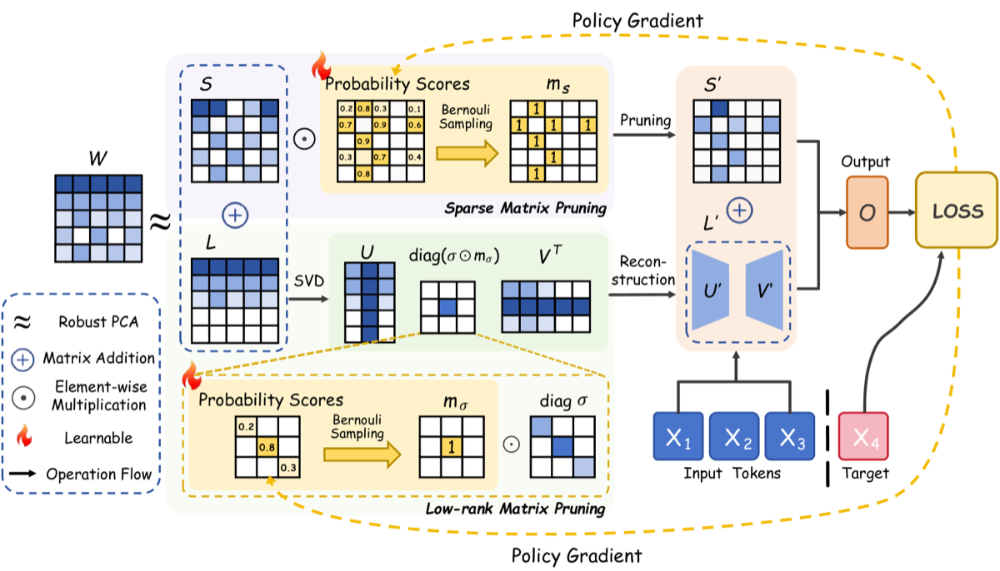

Why it matters왜 중요한가
The hard part of low-rank+sparse compression isn't the decomposition — it's deciding how much rank and sparsity each layer deserves.
저랭크+희소 압축의 어려운 부분은 분해가 아니라, 각 층에 얼마나 rank·sparsity를 줄지 정하는 일이다.
Prior "low-rank plus sparse" methods (e.g. LoSparse) capture global structure with a low-rank part and outliers with a sparse part — but they rely on manually chosen singular-value thresholds, which silently discard medium-sized yet important singular values, and they update the two parts largely independently with expensive backprop. Worse, redundancy differs sharply from early to deep layers, so a uniform per-layer budget over-prunes some layers and under-prunes others. CAP reframes compression as a global resource-allocation problem: first shrink the search space with a principled convex decomposition, then let a probabilistic mask learn the allocation jointly across all layers and across both components at once.
기존 "저랭크+희소" 방법(예: LoSparse)은 저랭크부로 전역 구조를, 희소부로 이상치를 잡지만 특이값 임계값을 손으로 고른다 — 그래서 중간 크기지만 중요한 특이값을 조용히 버리고, 두 부분을 비싼 역전파로 거의 독립적으로 갱신한다. 더 나쁜 건, 중복도가 초기 층과 깊은 층에서 크게 달라 균일한 층별 예산은 어떤 층은 과하게, 어떤 층은 부족하게 가지치기한다는 점이다. CAP는 압축을 전역 자원 배분 문제로 재정의한다: 먼저 원칙적인 볼록 분해로 탐색 공간을 줄이고, 그다음 확률적 마스크가 모든 층·두 성분에 걸친 배분을 한꺼번에 학습하게 한다.

By the numbers핵심 숫자
+ Bernoulli mask learning2단계: RPCA 분해
+ Bernoulli 마스크 학습
at the headline results대표 결과의
압축률
@50% (vs OATS 68.41)Phi-3 Mini CAP 제로샷 정확도
@50% (vs OATS 68.41)
@50% (vs OATS 10.87)LLaMA-3 8B CAP WikiText PPL
@50% (vs OATS 10.87)
backprop through LLM weights손으로 정한 임계값 &
LLM 가중치 역전파
tasks averaged평균낸 제로샷
상식 추론 과제
Results — CAP vs. strong pruning baselines @50%결과 — CAP vs. 강한 가지치기 베이스라인 @50%
| Model | Metric | SparseGPT | OATS | CAP | Dense |
|---|---|---|---|---|---|
| Phi-3 Mini | Acc ↑ | 66.36 | 68.41 | 69.12 | 72.85 |
| LLaMA-3 8B | Acc ↑ | 64.66 | 65.71 | 66.85 | 70.79 |
| LLaMA-3 70B | Acc ↑ | 73.17 | 73.30 | 74.18 | 76.53 |
| Phi-3 Mini | PPL ↓ | 16.80 | 15.18 | 14.68 | 9.42 |
| LLaMA-3 8B | PPL ↓ | 11.95 | 10.87 | 10.35 | 8.56 |
| LLaMA-3 70B | PPL ↓ | 5.27 | 4.78 | 4.45 | 2.68 |
In one diagram한 장의 그림
The two ideas두 가지 아이디어
RPCA decomposition
Cast the split as a convex program (nuclear norm for the low-rank part + L1 for the sparse part), giving a globally optimal, principled separation of W into L + S. This isolates global correlations from outliers and sharply reduces the optimization space for Stage 2 — no manual rank or threshold needed.
분해를 볼록 최적화(저랭크부엔 nuclear norm + 희소부엔 L1)로 정식화해 W를 L + S로 전역 최적·원칙적으로 분리한다. 전역 상관과 이상치를 갈라내는 동시에 2단계의 최적화 공간을 크게 줄인다 — 수동 rank·임계값 불필요.
Bernoulli global allocation
Each candidate singular value and each sparse entry gets a Bernoulli retention probability. Under a total budget K, these probabilities are learned by an unbiased policy-gradient estimator on a small calibration set — automatically detecting per-layer redundancy and managing the L↔S interaction, with no backprop through the LLM.
후보 특이값과 희소 원소 각각에 Bernoulli 유지 확률을 부여한다. 총 예산 K 하에서 이 확률들을 작은 보정 셋에서 불편 policy-gradient 추정으로 학습 — 층별 중복도를 자동 감지하고 L↔S 상호작용을 관리하며, LLM 역전파는 없다.
How it works어떻게 작동하나
- RPCA factorizationRPCA 분해For every weight matrix W, solve the convex nuclear-norm + L1 program to get a strictly low-rank component L and a sparse component S, spanning a low-dimensional subspace and a sparse subspace.모든 가중치 W에 대해 볼록 nuclear-norm + L1 문제를 풀어 엄밀한 저랭크 성분 L과 희소 성분 S를 얻는다 — 각각 저차원 부분공간과 희소 부분공간을 형성.
- Assign retention probabilities유지 확률 부여Attach a learnable score to each low-rank singular value (m_σ) and each sparse entry (m_s); interpret each as a Bernoulli "keep / drop" variable under a global parameter budget K.각 저랭크 특이값(m_σ)과 각 희소 원소(m_s)에 학습 가능한 점수를 붙이고, 전역 예산 K 하에서 이를 Bernoulli "유지/제거" 변수로 해석한다.
- Optimize by policy gradientpolicy gradient로 최적화Sample masks, measure the reconstruction/output loss on a small calibration set, and update the probabilities with an unbiased REINFORCE-style estimator — jointly across all layers and both components, no LLM backprop.마스크를 샘플링해 작은 보정 셋에서 복원/출력 손실을 측정하고, 불편 REINFORCE 계열 추정으로 확률을 갱신한다 — 모든 층·두 성분에 걸쳐 동시에, LLM 역전파 없이.
- Reconstruct compressed weights압축 가중치 재구성Keep only the high-probability singular values (as U'Σ'V') and sparse entries (S'); store the compact factors, cutting storage and inference cost while preserving accuracy.확률이 높은 특이값(U'Σ'V')과 희소 원소(S')만 남겨 컴팩트한 인자로 저장 — 정확도를 지키며 저장·추론 비용을 절감.
What to take away그래서, 가져갈 것
Learned allocation beats heuristics. At 50% compression CAP tops SparseGPT, Wanda, OATS and layerwise OWL/AlphaPruning on both accuracy and perplexity across Phi-3 and LLaMA-3.
학습된 배분이 휴리스틱을 이긴다. 50% 압축에서 CAP는 Phi-3·LLaMA-3 전반의 정확도·perplexity 모두에서 SparseGPT·Wanda·OATS 및 층별 OWL/AlphaPruning을 앞선다.
Decompose first, then decide. RPCA's convex split makes the budget-allocation search small enough that a probabilistic mask can solve it well — separating "what's structurally distinct" from "what's worth keeping."
먼저 분해, 그다음 결정. RPCA의 볼록 분리가 예산 배분 탐색을 충분히 작게 만들어 확률 마스크로 잘 풀 수 있게 한다 — "구조적으로 무엇이 다른가"와 "무엇이 남길 가치가 있는가"를 분리.
No thresholds, no LLM backprop. Policy gradient on a small calibration set replaces both manual singular-value cutoffs and expensive end-to-end fine-tuning — a training-light, plug-in-friendly recipe.
임계값도 LLM 역전파도 없음. 작은 보정 셋에서의 policy gradient가 수동 특이값 컷오프와 비싼 종단간 미세조정을 모두 대체 — 가벼운 학습·플러그인 친화적 레시피.